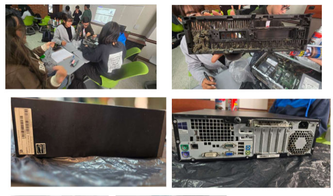

El primer proyecto parcial de mantenimiento de equipo de cómputo tiene como propósito aplicar de manera práctica los conocimientos adquiridos en clase, garantizando el cuidado y funcionamiento adecuado de los componentes de hardware. Para ello, cada grupo debe contar con insumos básicos como bola de waipe, case de computadora con sus componentes internos, kit de herramientas, kit de limpieza especializado, pasta térmica y una bolsa plástica para proteger el área de trabajo. Con estos materiales se desarrollan diversas actividades que deben consolidarse en un único documento académico. Entre ellas se incluyen la creación y llenado de un formulario de mantenimiento, la toma de fotografías del grupo durante la actividad y del equipo con sus principales componentes, la investigación de cada parte del CPU explicando su función acompañada de imágenes, la identificación de doce circuitos integrados de la motherboard, y la elaboración de un informe detallado del mantenimiento realizado. El documento final debe presentar una estructura formal que incluya portada, carátula, índice, introducción, objetivos, descripción del equipo, tabla y explicación de componentes con imágenes, informe con el formulario, conclusiones, recomendaciones y bibliografía. Además, como complemento, se debe preparar una presentación en diapositivas para exponer el proyecto en clase, mostrando tanto el proceso como los resultados obtenidos
Los objetivos de este proyecto parcial de mantenimiento de equipo de cómputo se orientan a aplicar de manera práctica los conocimientos adquiridos en clase, garantizando el cuidado y correcto funcionamiento de los componentes de hardware. Se busca además utilizar insumos básicos y herramientas especializadas para desarrollar actividades como la creación y llenado de un formulario de mantenimiento, la toma de fotografías del proceso y del equipo, la investigación de cada parte del CPU con su respectiva función, y la identificación de doce circuitos integrados de la motherboard. Con ello, se pretende elaborar un informe académico completo y estructurado, acompañado de una presentación en diapositivas que muestre tanto el proceso como los resultados obtenidos, fomentando la disciplina, el razonamiento lógico y la precisión técnica en el estudiante, así como el fortalecimiento de sus competencias en el área de mantenimiento y cuidado de sistemas de cómputo.
